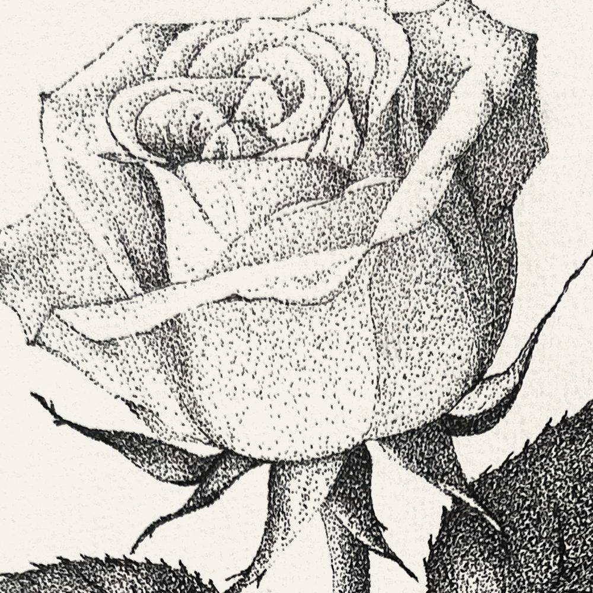

The art of looking closer.
Original drawings in archival ink, made one dot at a time on cotton paper, in Tairāwhiti, Aotearoa.
See the workEvery tone in these drawings is made from single dots of ink. A shadow is simply more dots, set closer together, so even a small drawing takes several days.
Work
Portraits and botanicals, each an original drawing. Select any image to see it full size.

Silk
Square scarves in silk twill, printed from the original drawings and finished by hand.
Each design will be made in a small numbered run, with a hand-rolled hem and a stippled tartan border drawn in the studio. The first scarves are in development and nothing is for sale yet.
Ask to hear first
Collaborations
Original artwork for fashion, beauty, fragrance and interiors, licensed for packaging, campaigns and limited editions.
Brands can license an existing drawing or commission a new one. Each project begins with the drawing, so what reaches the shelf carries the same hand as the original on paper.

The art of looking closer.
Illustration by Sarah Lauren
These are speculative studies made in the studio, not commissioned projects.
Start a project
Atelier
Thousands of marks, placed one at a time.
Each drawing begins as a faint pencil outline. Tone is then built slowly across the sheet in single points of pigment ink, with fine line kept for the few places that need it, such as hair.
- Ink
- Archival pigment fineliner
- Paper
- 100% cotton, hot pressed, 300 gsm
- Method
- Stipple and fine line, by hand
- Time
- Days for each drawing, not hours
Online courses in stippling are being prepared. Ask to hear when they open.


About
Sarah Lauren is an artist of Scottish descent who draws in black ink, one mark at a time.
She trained in fashion design, graduating with honours, and brings that attention to line, proportion and material to portraits and botanical drawing.
She works from Tairāwhiti, on the east coast of Aotearoa. The practice centres on original drawings and extends, through selected collaborations, into silk, editions and teaching.